Beban di Piring Kita
Harga pangan bukan sekadar soal komoditas, tetapi juga soal lokasi. Dari 13.011 observasi di 34 provinsi dan 218 pasar, rata-rata nasional kerap mereduksi realitas dengan menyamarkan disparitas harga yang tajam antarwilayah.
Harga pangan bukan sekadar soal komoditas, tetapi juga soal lokasi. Dari 13.011 observasi di 34 provinsi dan 218 pasar, rata-rata nasional kerap mereduksi realitas dengan menyamarkan disparitas harga yang tajam antarwilayah.

Peta ini menunjukkan bahwa harga pangan tidak tersebar merata. Ketika komoditas diganti, wilayah yang tampak mahal dan murah juga dapat berubah. Artinya, beban pangan bukan hanya ditentukan oleh jenis makanan, tetapi juga oleh posisi geografis dan akses pasar.
Harga pangan pokok seperti beras berada pada lapisan harga yang jauh lebih rendah dibandingkan sumber protein hewani. Ini tidak secara langsung mengukur kualitas gizi atau pola konsumsi rumah tangga, tetapi memperlihatkan struktur harga pangan: kebutuhan untuk kenyang dan kebutuhan untuk asupan protein berada pada tingkat biaya yang berbeda.
Ranking mengubah peta menjadi urutan yang lebih mudah dibaca. Di sini terlihat provinsi mana yang menempati posisi atas dan bawah untuk setiap komoditas. Dengan cara ini, pembaca tidak hanya melihat bahwa suatu wilayah "mahal", tetapi juga memahami mahalnya terjadi pada komoditas tertentu.
Dumbbell chart menyoroti provinsi dengan harga terendah dan tertinggi untuk setiap komoditas, di mana panjang garis mencerminkan besarnya jurang harga antarwilayah. Hal ini menegaskan bahwa rata-rata nasional tidak cukup merepresentasikan kondisi nyata, karena konsumen tidak membayar rata-rata, melainkan harga lokal yang mereka hadapi di wilayahnya.
Perbedaan harga tidak hanya terjadi antarwilayah, tetapi juga berubah sepanjang waktu, di mana sebagian komoditas tetap tinggi secara konsisten sementara yang lain berfluktuasi tajam dari bulan ke bulan. Hal ini menunjukkan dua wajah beban pangan, yaitu harga yang terus menekan dan harga yang sulit diprediksi.
Cerita di atas menunjukkan pola utama bahwa harga pangan tidak merata. Pada bagian ini, pembaca dapat memilih satu komoditas untuk melihat ringkasannya, mulai dari rata-rata nasional, provinsi termahal dan termurah, selisih harga, hingga tren bulanan. Dengan demikian, alur tidak berhenti pada satu kesimpulan, melainkan membuka ruang eksplorasi untuk mengidentifikasi komoditas yang paling membebani wilayah tertentu.
Harga pangan tidak cukup dijawab dengan "berapa rata-ratanya?". Pertanyaan yang lebih penting adalah: siapa yang membayar lebih, di mana, untuk makanan apa, dan kapan?